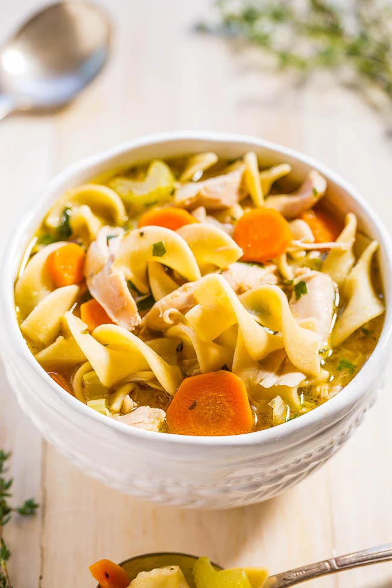

Chicken Noodle Soup

A true staple of the fall and winter seasons
A warm, hearty meal for all those chilly nights during the Holidays.
Perfect to compliment guests for Thanksgiving and Christmas!
Ingredients
- 1 tablespoon of butter
- 1/2 cup chopped onion
- 1/2 cup chopped celery
- 4 cans chicken broth
- 1 can vegetable broth
- 1/2 pound chopped cooked chicken breast
- 1 & 1/2 cups egg noodles
- 1 cup sliced carrots
- 1/2 teaspoon dried basil
- 1/2 teasppon dried oregano
- salt and ground black pepper to taste
Directions
- Melt butter in a large pot over medium heat. Add onion and celery and cook until just tender, about 5 minutes.
- Add chicken broth, vegetable broth, chicken, egg noodles, carrots, basil, oregano, salt, and pepper. Stir to combine and bring to a boil.
- Reduce heat and simmer for 20 minutes